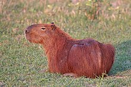

Cappybara webpage
Capybara

The capybara[a] or greater capybara (Hydrochoerus hydrochaeris) is a giant cavy rodent native to South America.
It is the largest living rodent[2] and a member of the genus Hydrochoerus. The only other extant member is the lesser capybara (Hydrochoerus isthmius).
Its close relatives include guinea pigs and rock cavies, and it is more distantly related to the agouti, the chinchilla, and the nutria.
The capybara inhabits savannas and dense forests, and lives near bodies of water. It is a highly social species and can be found in groups as large as 100 individuals,
but usually live in groups of 10–20 individuals.
The capybara is hunted for its meat and hide and also for grease from its thick fatty skin.[3] It is not considered a threatened species.